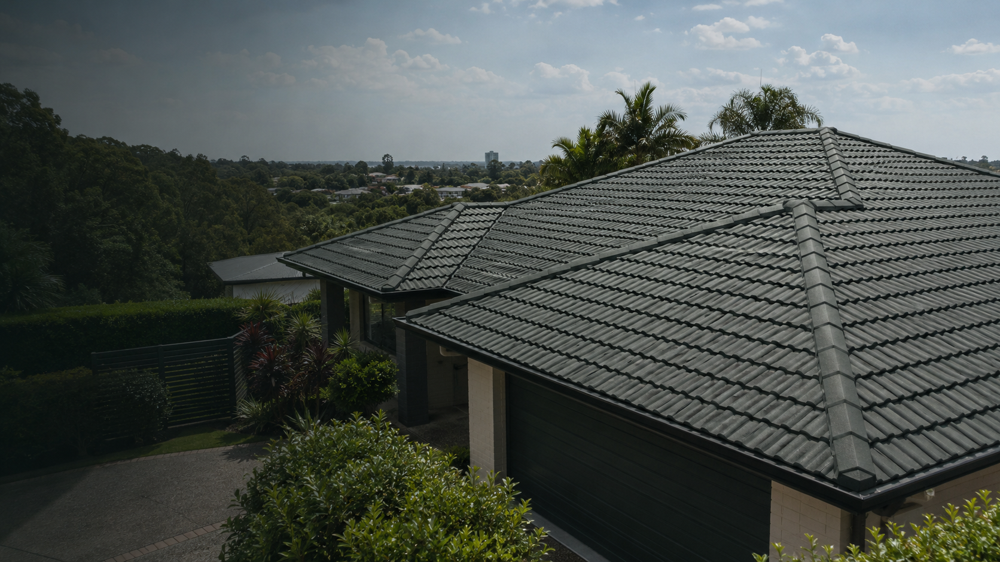
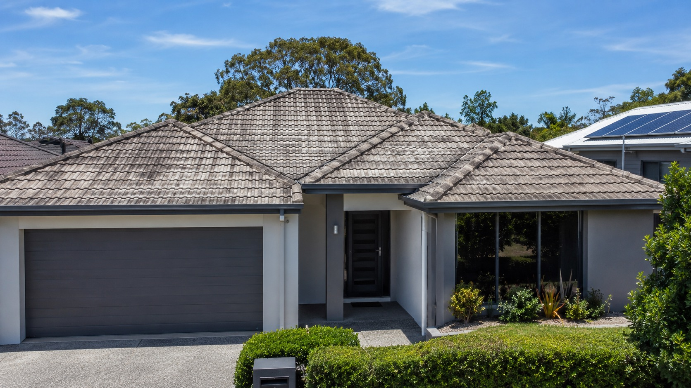
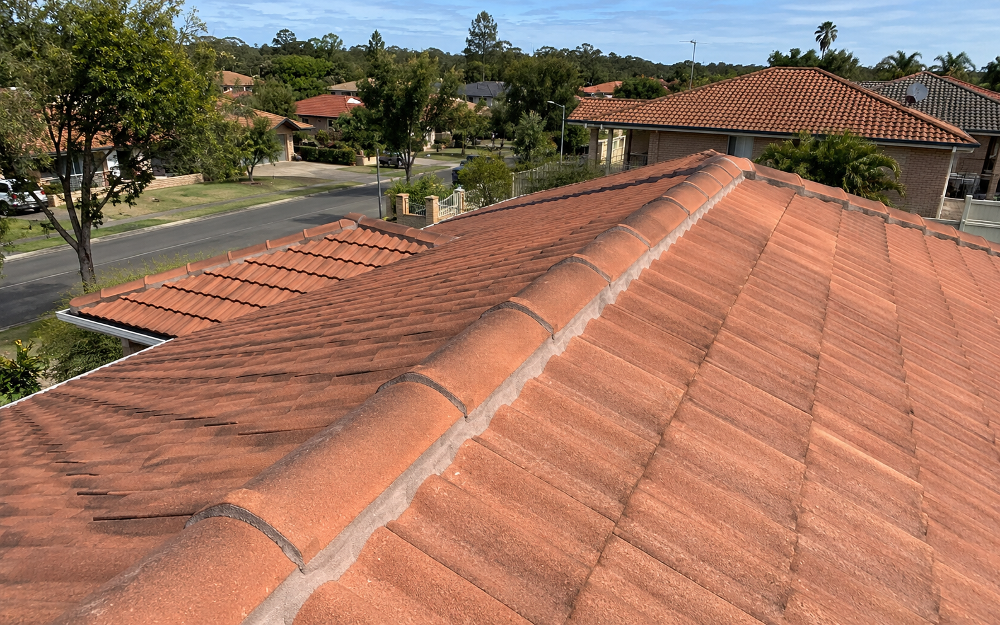

Service · Restoration
Roof restoration.
Restoration is the careful middle path between repair and replacement. It is the right answer when the roof structure is sound, but the surface, ridge work, and detailing have aged faster than the home underneath.

When restoration is appropriate
The roof is tired, not finished.
Restoration is the answer when the underlying tiles or sheets still have life in them, but the ridge mortar, bedding, flashings, valleys, and coating have aged. Replacing the whole roof in that situation is over-correction. Patching alone leaves the visible deterioration in place. Restoration sits exactly between the two.
- Tiles or sheets are intact but the surface coating has weathered, faded, or lost its film.
- Ridge capping and bedding are loose, cracked, or showing daylight at the joints.
- Flashings around chimneys, skylights, or vents have lifted, perished, or pulled away.
- Valleys are holding debris and the rust line is becoming visible from the ground.
- The home is being prepared for sale and the roofline needs to read as cared-for.
Process
How a restoration project actually runs.
Each step is named on the quote and signed off before the next one begins.
Condition walk
The roof is walked, photographed, and noted. The homeowner receives a written summary before any scope is built.
Pressure clean
Loose film, lichen, and surface debris are removed with the lowest effective pressure to protect the substrate.
Re-bed & re-point
Ridge tiles are lifted, the bed and point are rebuilt to the correct profile, and flashings are renewed where needed.
Coat & finish
Primer, two membrane coats, and a finish coat selected from heritage-appropriate colours, applied in the right weather window.
Materials
What goes on the roof, and why.
We use one bedding compound, one pointing compound, and a single membrane system per project. The brand is named on the quote — no substitutions, no “or equivalent”.
Flexible pointing
A flexible polymer pointing compound that moves with thermal expansion instead of cracking. Outlasts traditional sand-and-cement by a wide margin on exposed ridges.
Membrane coating
A primer, two-coat membrane, and finish coat system rated for full-sun exposure. Colour matched to the home, not to a swatch sheet held under a workshop light.
Lead & aluminium flashings
For chimneys, parapets, and skylight transitions where the original flashing has perished. Worked on site to the actual profile, not pre-formed.
Before & after
A recent restoration, in two photographs.
Same roof, same week. The work between the two photographs is everything described on this page.


Detail work
The small parts that make a restoration last.
Two of the things we treat as non-negotiable on every restoration project.
FAQ · restoration
Questions homeowners ask before booking a restoration.
If the question is not here, the visit is the right place to ask it.
How long does a restoration last?
The membrane system carries a manufacturer warranty in years, but the practical answer depends on exposure, pitch, and the condition of the substrate. We will give an honest range during the visit, not the manufacturer’s maximum.
Is restoration cheaper than replacement?
Usually, yes — often substantially. But not always. If the substrate is at end of life, restoration is money spent on a roof that will need replacing anyway. The visit is where that line is drawn.
How long is the home without a roof?
It isn’t. Restoration works on top of the existing roof. Internal disruption is close to zero, and the home stays watertight the entire time.
Can we change the colour?
Yes. The finish coat is selected with the architecture in mind. We bring samples to the home and view them in actual light, not under workshop lights.
What if you find something serious during the clean?
We stop, photograph it, and call. No additional work happens until the homeowner has seen the issue and signed off on a revised scope.
Next step
If the roof looks tired but the structure is sound, restoration is probably the right answer.
The visit confirms whether it is. If restoration is not the right call, we will say so and explain why — in plain language, with the roof in front of us.
Book a Roof Visit